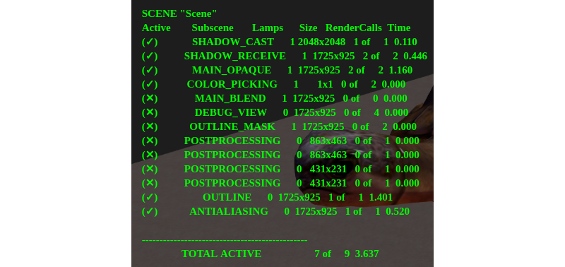
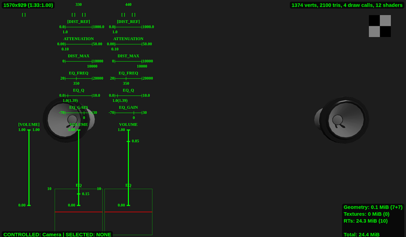
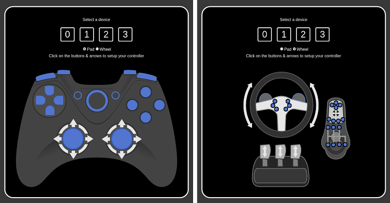
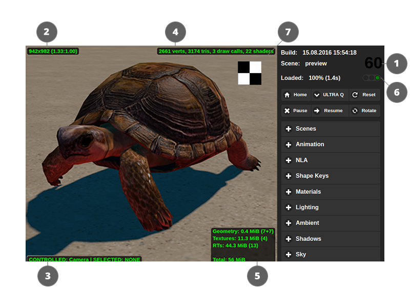

Просмотрщик сцен¶
Содержание
Боковая панель¶
Боковая панель содержит в себе три области: информационное табло, базовые кнопки управления и список выпадающих панелей, содержащий дополнительные элементы управления, разделённые по функциональному признаку.

Список элементов управления сверху вниз
Информационное табло¶
- Build
Дата и время сборки движка. В версии для разработки показывает время загрузки страницы.
- Scene
Название загруженной сцены. При наведении курсора мыши всплывает путь к файлу.
- Loaded
Процент и время загрузки.
Базовые кнопки управления¶
- Home
Загружает последнюю сцену, экспортированную из Blender с помощью кнопки
Fast Preview, или сцену по умолчанию, если Просмотрщик запущен не из Blender.- Reset
Кнопка удаляет сохраненное название последней просмотренной сцены и перезагружает страницу, возвращая к сцене по умолчанию.
- LOW Q - HIGH Q - ULTRA Q
Выпадающее меню выбора профиля работы движка.
См.также
- Pause
Приостановка рендеринга.
- Resume
Возобновление рендеринга.
- Rotate
Включает и выключает автоматический поворот камеры вокруг сцены. По умолчанию отключён.
Дополнительные панели¶
Tools & Debug¶
На панели находится ряд инструментов отладки сцен, в том числе:
- Overview Outlining Mode
Активация этого параметра делает все объекты сцены доступными для выбора и включает проигрывание анимации подсветки при выборе объекта. Этот параметр включён по умолчанию.
- Auto View Mode
При нажатии на эту кнопку Просмотрщик загружает все сцены из списка
Scenesс интервалом в одну секунду. Может применяться для проверки всего доступного контента на наличие консольных ошибок.- Canvas Resolution Factor
Применяется для увеличения разрешения canvas’а. Значение этого параметра может меняться от 1 до 10. Значение по умолчанию равно 1.0 (разрешение canvas’а совпадает с физическим разрешением окна Просмотрщика).
Примечание
Максимальное доступное разрешение может быть ограничено веб-браузером.
- Make Screenshot
Применяется для снятия скриншотов окна Просмотрщика. Скриншоты сохраняются в той же директории, которую веб-браузер использует для сохранения загруженных файлов.
- Debug View Modes
Список различных режимов визуализации, применяемых для отладки. Доступные режимы:
NONE- стандартный режим визуализации. Используется по умолчанию.OPAQUE WIREFRAME- сцена окрашена плоским белым цветом с тёмной каркасной сеткой. Цвет сетки может быть настроен с помощью параметраWireframe Edge Color.TRANSPARENT WIREFRAME- сцена визуализируется так же, как в нормальном режиме, но с добавлением каркасной сетки. Как и в предыдущем режиме, цвет сетки может быть настроен с помощью параметраWireframe Edge Color.FRONT BACK VIEW- в этом режиме внешние и внутренние стороны полигонов окрашиваются разными цветами.BOUNDINGS- в этом режиме к изображению добавляются каркасные сферы, окружающие объекты и меши. Сферы могут иметь синий (для статических объектов и мешей) или красный (для динамических объектов) цвет.CLUSTER VIEW- в этом режиме каждый объект, принадлежащий к определённому кластеру (используемому для батчинга) окрашивается особым цветом.BATCH VIEW- в этом режиме каждый батч окрашен особым (плоским) цветом. Цвета, используемые для визуализации, могут быть заменены на другие, случайно выбранные, цвета с помощью кнопкиChange Colors.RENDER TIME- в этом режиме сцена визуализируется при помощи разных цветов, отображающих сложность различных участков сцены. Наиболее простые для рендеринга части окрашиваются зелёным цветом, более сложные - жёлтым, а потребляющие наибольшее количество вычислительных ресурсов - красным.- Change Colors
Случайным образом меняет цвета, используемые в режимах
CLUSTER VIEWиBATCH VIEW. Применяется в случаях, когда части изображения трудно отличить друг от друга из-за того, что цвета, выбранные движком, слишком похожи.- Render Time Threshold (ms)
Задаёт “пороговое” время для режима визуализации
RENDER TIME. Если рендеринг какого-либо объекта занимает больше времени, чем указано этим параметром, этот объект будет окрашен красным цветом. Значение по умолчанию - 1.5 мс.- Wireframe Edge Color
Используется для изменения цвета каркасной сетки в режимах
OPAQUE WIREFRAMEиTRANSPARENT WIREFRAME.- HUD Info
- 
Показывает список визуализируемых подсцен и их параметров, таких, как:
- SCENE
Имя текущей сцены.
- Active
Показывает, активна ли подсцена.
- Subscene
Имя подсцены.
- Lamps
Количество источников света в подсцене.
- Size
Разрешение, используемое для рендеринга подсцены.
- RenderCalls
Количество вызовов отрисовки в подсцене.
- Time
Время, которое движок тратит на рендеринг подсцены.
- TOTAL ACTIVE
Количество вызовов отрисовки во всех доступных подсценах и время, затрачиваемое движком на их рендеринг.
Включение этого параметра может снизить скорость рендеринга сцены. По умолчанию он выключен.
- GL Debug
Активация этого параметра заставляет движок обрабатывать низкоуровневые ошибки. Это может существенно снизить производительность. При первом запуске Просмотрщика этот параметр деактивирован, а при последующих запусках приложение запоминает его состояние.
- Min Capabilities Mode
При активации этого параметра Просмотрщик запускает сцену так, как если бы она работала на системе с низкой производительностью (например, на мобильном устройстве). Это позволяет проверить, какие материалы могут не работать так, как задумано, на низкопроизводительной системе. По умолчанию выключено.
{kind=link}
Animation¶
Управление анимацией. При просмотре анимированных моделей можно выбирать объект и переключать для него анимацию с помощью выпадающего меню, включать режим циклической анимации, останавливать и возобновлять анимацию, выставлять нужный кадр (при этом анимация должна быть остановлена).
Доступные параметры:
- Play All
Проигрывает все доступные анимации.
- Stop All
Останавливает все анимации, которые воспроизводятся в настоящий момент.
- Object
Список присутствующих в сцене объектов, имеющих анимации.
- Animation Slot
Список всех доступных слотов, которые могут использоваться для применения какой-либо анимации к объекту.
- Animation
Список всех анимаций, доступных для выбранного объекта.
- Cyclic
При активации этого параметра анимация будет воспроизводиться циклически. В противном случае анимация остановится после одного проигрывания. По умолчанию включён.
- Range
Длинна выбранной анимации.
- Status
Состояние выбранное анимации, т.е. проигрывается ли она или остановлена.
- Playing Animation > Play
Воспроизводит выбранную анимацию.
- Playing Animation > Stop
Останавливает выбранную анимацию.
- Set Frame
Показывает текущий кадр анимации. Может применяться для задания текущего кадра.
- Skeletal Mix Factor
Задаёт степень сvешивания скелетных анимаций. Значение по умолчанию - 1.0.
NLA¶
Управление NLA-анимацией (если таковая присутствует в сцене). Для работы этой вкладки должна быть включена опция NLA в настройках сцены.
Доступные параметры:
- Range
Начальный и конечный кадры NLA-анимации.
- Status
Состояние NLA-анимации, т.е. проигрывается ли она или остановлена.
- Playing NLA > Play
Воспроизводит NLA-анимацию.
- Playing NLA > Stop
Останавливает проигрываемую NLA-анимацию.
- Set Frame
Если анимация остановлена, этот параметр может применяться для задания текущего кадра.
Shape Keys¶
Управление доступными ключами формы. При просмотре моделей, обладающих ключами формы, можно выбрать объект, один из ключей и степень влияния ключа на объект.
Доступные параметры:
- Object
Список всех присутствующих в сцене объектов, имеющих ключи формы.
- Shape Key
Список всех ключей формы, доступных для выбранного объекта.
- Set Value
Этот параметр задаёт степень влияния выбранного ключа формы на форму выбранного объекта. Значение может изменяться от 0 до 1.
Materials¶
Настройка свойств материалов. Материал выбирается с помощью выпадающего меню. В настоящий момент поддерживается изменение ограниченного ряда свойств, и только для стековых (не нодовых) материалов, присвоенных динамическим объектам (нодовые материалы и статические объекты не поддерживаются).
Доступные параметры:
- Material
Список всех стековых материалов, присутствующих в сцене.
- Color
Задаёт базовый цвет выбранного материала.
- Reflectivity
Задаёт силу зеркального отражения для выбранного материала. Значение по умолчанию - 0.
- Fresnel
Сила эффекта Френеля для отражения. По умолчанию равна нулю.
- Fresnel Factor
Фактор эффект Френеля. По умолчанию равен нулю.
- Parallax Scale
Фактор влияния эффекта рельефа. Значение этого параметра может изменяться от 0 до 0.1, значение по умолчанию - 0.
- Parallax Steps
Количество итераций для расчёта эффекта рельефа. Значение этого параметра может изменяться от 1 до 30, по умолчанию он равен 5.
Lighting¶
Настройка параметров прямого освещения. Источник света выбирается с помощью выпадающего меню. Поддерживается изменение цвета и интенсивности. Также на этой панели осуществляется настройка параметров времени суток и солнечного освещения.
{kind=link}
Доступные параметры:
- Light
Список всех источников света, присутствующих в сцене.
- Type
Тип выбранного источника света. Этот параметр не может быть изменён в Просмотрщике.
- Color
Базовый цвет выбранного источника света. По умолчанию используется белый цвет (1; 1; 1).
- Energy Coarse
Этот параметр задаёт целую часть значения энергии источника света. Значение может изменяться от 0 до 100. Значение по умолчанию - 1.
- Energy Precise
Этот параметр задаёт дробную часть значения энергии источника света. Значение может изменяться от 0 до 1, по умолчанию равно 0.
- Light Energy
Энергия источника света. Это значение вычисляется как сумма параметров Energy Coarse и Energy Precise. Если значения этих параметров совпадают с их значениями по умолчанию, энергия будет равна 1.
- Spot Size
Угол светового потока, излучаемого источником света. Значение по умолчанию - 75. Этот параметр доступен только для источников сета типа
Spot.- Spot Blend
Степень размытия границы пятна прожектора. Значение по умолчанию - 0.15. Этот параметр также доступен только для источников света типа
Spot.- Distance
Этот параметр задаёт расстояние (в метрах), на котором свет, излучаемый источником, будет иметь яркость, равную половине значения параметра
Light Energy. По умолчанию равен 30.
Следующие настройки доступны только для источников света типа Sun:
{kind=link}
- Real Time Sun Movement > Play
Включает движение солнца в реальном времени.
- Real Time Sun Movement > Stop
Останавливает движение солнца в реальном времени.
- Date
Задаёт текущую дату.
- Time
Этот параметр задаёт текущее время дня или ночи. По умолчанию равен 12.0.
- Maximum Sun Vertical Angle
Этот параметр задаёт максимальный вертикальный угол для источника света типа
Sun. Значение по умолчанию - 60.- Time Multiplier
Значение этого параметра задаёт скорость течения времени. Значение по умолчанию - 1.0 (время в сцене течёт с той же скоростью, что и в действительности.
- Horizontal Position
Горизонтальная позиция солнца на небесной сфере. Значение по умолчанию - 29.82.
- Vertical Position
Вертикальная позиция солнца на небесной сфере. Значение по умолчанию - 34.82.
Ambient¶
Настройка параметров освещения от окружающей среды. Поддерживается изменение цветов в полусферической модели освещения и интенсивности.
Настройки, доступные для освещения от окружающей среды, совпадают с соответствующими настройками в Blender. Более подробно они описаны в отдельном разделе.
Shadows¶
Настройка параметров падающих теней, включая параметры каскадов теней и параметры смягчения краев теней.
Настройки теней описаны в соответствующем разделе данного руководства.
Sky¶
Настройка параметров динамического неба, таких как цвет, параметры рассеивания солнечного света и т.д.
Просмотрщик сцен предоставляет пользователю доступ ко всем параметрам Blender, используемым для настройки процедурного неба. Эти параметры описаны в соответствующем разделе.
Sea¶
Настройка параметров рендеринга воды, включая переходы цвета по глубине и удаленности от берега, параметры пены, подповерхностного рассеивания, динамики волн и т.д.
Настройки рендеринга воды описаны в главе “Природные эффекты”. Просмотрщик использует те же настройки, что и сам движок Blend4Web.
Mist¶
Настройка параметров тумана.
Просмотрщик сцен использует стандартные настройки рендеринга тумана, описанные в отдельной главе.
Wind¶
Настройка параметров ветра, включая направление и силу.
В Просмотрщике используется тот же набор параметров, что и в Blender. Эти параметры описаны в соответствующей главе.
Wind Bending¶
Настройка параметров эффекта Wind Bending.
Аналогичный набор параметров Wind Bending доступен в Blender и описан в главе Природные эффекты“
Screen Space Amb Occlus¶
Настройка параметров взаимного затенения.
Все доступные настройки описаны в главе “Спецэффекты”.
God Rays¶
Настройка параметров эффекта сумеречных лучей.
Все параметры этого эффекта описаны в соответствующем разделе.
Bloom¶
Настройка параметров эффекта глубины резкости камеры.
Этот эффект использует те же параметры, что и в Blender. Более подробно они описаны в соответствующем разделе.
Motion Blur¶
Настройка эффекта размытия изображения при движении.
Параметры, используемые для настройки эффекта размытия, совпадают с таковыми в Blender. Они описаны в главе “Спецэффекты”.
Glow Materials¶
Настройка эффекта свечения материалов.
Настройки этого эффекта описаны в соответствующем разделе.
Depth of Field¶
Настройка параметров эффекта глубины резкости камеры.
Настройки описаны в соответствующем разделе.
Color correction¶
Настройка параметров цветовой коррекции, включая яркость, контрастность, экспозицию и насыщенность.
В самом Blender для цветокоррекции используется такой же набор параметров. Описание этих параметров находится в главе “Работа с цветом”.
Audio¶
На панели находится переключатель режима микширования. После включения на сценах со звуковыми источниками появляется интерфейс микшера.
- Mixer
Включает эквалайзер, демонстрирующий различные параметры (в т.ч. громкость, частоту, расстояние, затухание) источников звука, присутствующих в сцене, и позволяет пользователю настраивать эти параметры с помощью дополнительной цифровой клавиатуры. Подробнее доступные параметры описаны в соответствующем разделе главы “Звук”.
По умолчанию этот параметр деактивирован.
{kind=link}
Stereo View¶
На панели находится переключатель режима стерео-изображения.
Доступные параметры:
- Stereo Types
Список доступных режимов рендеринга стереоизображения. На сегодняшний день доступно три режима:
NONE- стереорендеринг не используется.ANAGLYPH- используется анаглифное изображение.HMD- используется рендеринг для шлемов виртуальной реальности. Этот режим доступен только в том случае, если соответствующее устройство подключено к системе.По умолчанию используется вариант
NONE.- HMD Settings
Показывает окно настроек HMD.
Input Devices¶
На этой панели находятся средства настройки устройств ввода.
- Gyroscope use
Включает использование гироскопов в приложении. По умолчанию отключено.
- Gamepad Settings
Вызывает окно настроек геймпадов.

{kind=link}
Индикаторы¶
{kind=link}
- Счетчик количества кадров в секунду
Находится в правом верхнем углу. Выводит усредненное и округленное значение за последние 1,5 секунды.
- Размер области рендеринга
Находится в левом верхнем углу. Выводит размер области рендеринга в пикселах.
- Выбранный объект и контролируемый объект
Находится в левом нижнем углу. Выводит название выбранного объекта и контролируемого объекта. Выбор объекта осуществляется мышью. Для получения прямого контроля над объектом (обычно в целях проверки физики) нужно нажать
Qи выбрать объект. Движение объекта осуществляется клавишамиW,A,S,D. Для выхода из режима контроля нужно нажатьQи “кликнуть” на пустом пространстве. Индикатор также показывает расстояние до выбранного объекта в единицах Blender’a (эквивалент метра).
- Индикатор сложности сцены
Находится в правом верхнем углу области рендеринга. Выводит количество вершин, треугольников и вызовов отрисовки WebGL на основной рендер-сцене (т.е. не учитываются, например, вызовы по отрисовке динамических теней).
- Индикатор видео-памяти
Находится в правом нижнем углу области рендеринга. Выводит количество видео-памяти, занимаемой геометрией, текстурами, буферами с результатами рендеринга (render targets), а также суммарное количество занимаемой памяти.
- Индикатор ошибок при загрузке сцены
Находится под счетчиком количества кадров. Выводит ошибки и предупреждения при загрузке сцены. Красный свет означает ошибки, желтый - предупреждения, зеленый - загрузка сцены прошла успешно.
Ошибки загрузки и предупреждения можно увидеть в консоли браузера.
- Индикатор прозрачности фона
Находится в правом верхнем углу экрана, ниже индикатора сложности сцены. Этот инструмент может применяться для отладки, т.к. позволяет проверить, прозрачен ли фон сцены. Имеет вид небольшого квадрата с чёрно-белым “шахматным” узором.
Этот индикатор заметен только в том случае, если фон приложения - прозрачный. На скриншоте выше он изображён для того, чтобы дать читателю представление о том, как этот индикатор мог бы выглядеть в реальном приложении.